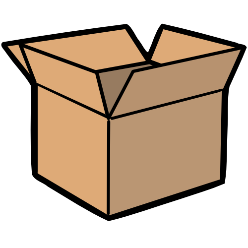

H2の見出し
これは文章中でも特に強調したいところ
太字にする

ここから始めるHTML
 黄金螺旋
黄金螺旋
| いつやるんですか？ | |||
|---|---|---|---|
| 担当 | 事象１ | 事象２ | 事象３ |
| 担当A | 今日やる | 明日やる | やらない |
| 担当B | できたらやる | できたらやる | 無理 |
| 担当C | やる | やる | やる |
一般に蝙蝠の空中揚力の強さは知られるところであるが、中国河南省山奥に生息する攣鵠蝙蝠はその揚力が５キロもあるといわれる。元朝中期、青巾族の乱の折り、元軍の都尉・安史明はこの蝙蝠２０匹を使い、万里の長城を越え敵を攪乱することに成功したという。 これを応用し、多彩な変化技を加えて成立したのが乖宙浮遊體であり、 怪拳として世に恐れられた。 民明書房刊『実用動物辞典』より